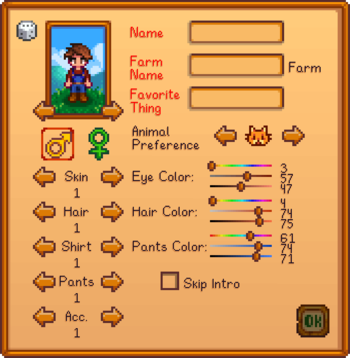

Ekran tworzenia postaci umozliwia opcje dostosowywania, takie jak wyglad postaci, plec, imie, nazwa gospodarstwa, ulubiona rzecz i preferencje zwierzat.
- Do wyboru sa 2 plcie, 24 odcienie skory, 73 fryzury, 112 koszul, 4 spodnie, 20 akcesoriow i 6 zwierzat (3 koty i 3 psy).
- Suwaki obok koloru oczu, koloru wlosow i koloru spodni przedstawiaja odcien, nasycenie i wartosc.
- Preferencje zwierzat okredlaja, ktore zwierze pojawi sie na farmie pozniej.
- Plev nie wplywa na malzenstwo w grze.
- „Ulubiona rzecz” bedzie pojawiac sie w grze, gdy gracz zje Stardrop.
 500g, w Wiezy Czarodzieja, po osiagnieciu z nim 4 Serc przyjazni lub uzyskaniu dostepu do Chatki Wiedzmy i skorzystaniu z portalu.
500g, w Wiezy Czarodzieja, po osiagnieciu z nim 4 Serc przyjazni lub uzyskaniu dostepu do Chatki Wiedzmy i skorzystaniu z portalu.

Gracze moga wybierac sposrod siedmiu roznych map farm. Kazda mapa oferuje unikalne korzysci i faworyzuje okreslone umiejetnosci.
Po wybraniu mapy nie mozna jej zmienic, postacie sa na stale zwiazane z ich typem mapy po utworzeniu. Pod względem kosmicznym każda mapa zajmuje ten sam obszar, ale na każdej z nich sa rozne ilosci ziemi uzytkowej / uprawnej / mozliwej do zbudowania.
| Nazwa | Opis | |
|---|---|---|
| Zwykla farma | Oryginalna mapa farmy, zaprojektowana z mysla o maksymalizacji otwartej przestrzeni dla upraw i zwierzat | |
| Lesna farma | Las wdziera sie na ziemie, ograniczajac przestrzen uprawna. Jednak na zachodniej krawedzi mapy znajduja sie odnawialne kikuty, a takze pojawiaja sie tam sezonowe przedmioty paszowe. Istnieje rodzaj chwastu, ktory pojawia sie na tej farmie, ktory wyglada wyjatkowo i zawsze zrzuca mieszane nasiona po scieciu. | |
| Farma na wzgorzu | Mnostwo klifow i specjalny obszar gorniczy na poludniowym zachodzie, gdzie ruda bedzie sie pojawiac, a takze unikalne kamienie geodezyjne | |
| Farma Riverland | Mnostwo wody na tej mapie... ograniczajace przestrzen dla upraw i zwierzat. Wyglada ladnie, a lowienie ryb jest oplacalne na tej farmie... W rzeczywistosci gracze moga lowic te same ryby, ktore sa dostepne w miescie. | |
| Dzika farma | Duze jezioro w poludniowo-zachodnim narozniku i urwisko wzdluz wschodu i poludnia. Potwory wyjda w nocy. Ich statystyki skaluja sie wraz z poziomem walki gracza. Wilderness Golemy sa unikalne na tej mapie. | |
| Farma Cztery Narozniki | Ziemia podzielona jest na cztery dzialki, kazda z wlasnym atutem. Idealny dla grupy! | |
| Farma na plazy | Dobre wedkowanie i zerowanie oraz mnostwo otwartej przestrzeni. Czasami na brzegu wyrzucaja sie skrzynie z zaopatrzeniem. Jednak zraszacze nie dzialaja w glebie piaszczystej. Wydaje sie byc bardziej dostosowany do graczy, ktorzy nie beda tak bardzo polegac na uprawach. | |
| Przycisk | opis |
|---|---|
| W A S D |
W Porusza sie do gory A Porusza sie w lewo S Porusza sie w dol D porusza sie w prawo |
 ,
C ,
C |
|
 ,
X ,
X |